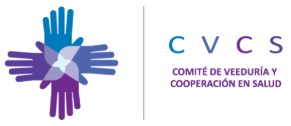
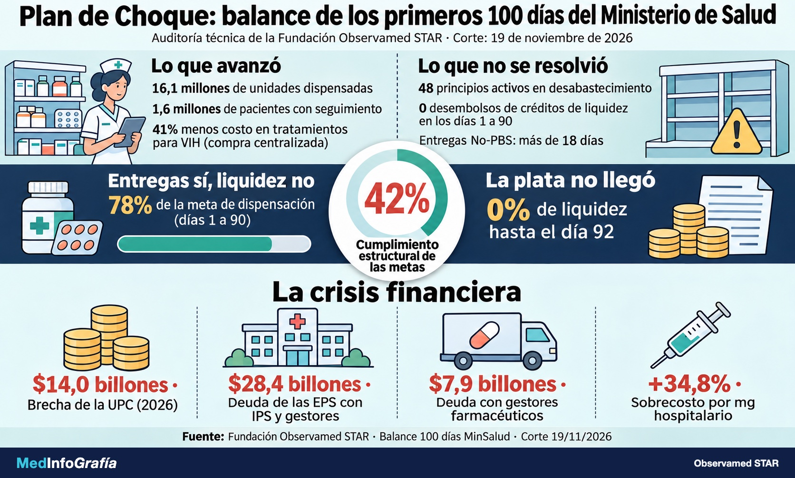

Análisis técnico para médicos, farmacólogos, economistas de la salud y especialistas del SGSSS sobre la ejecución operativa del "Plan Milagro", control de precios (CNPMDM/VMR/SISMED), trazabilidad en Mi-Pres, cartera EPS-IPS y brecha estructural de la UPC.
Nota metodológica del informe: síntesis analítica asistida por IA sobre fuentes regulatorias (SISMED, ADRES, Consejo de Estado, Circulares 022 y 033/2026).

El denominado "Plan de Choque" logró destrabar entregas puntuales mediante compras centralizadas (ej. antirretrovirales bajo Circular 033 de 2026) y mesas de seguimiento a 1,6 millones de usuarios; sin embargo, no resolvió las causas estructurales del desabastecimiento: la iliquidez de los gestores farmacéuticos por mora de las EPS y la ausencia de desembolsos en las líneas extraordinarias de crédito durante los primeros 90 días.
Obsérvese la brecha crítica entre los días 1 y 90: mientras la dispensación administrativa alcanzó el 78% de la meta de contingencia, la inyección real de liquidez permaneció en 0% hasta la reglamentación tardía del día 92.
| Dimensión Evaluada | Puntos Fuertes / Aciertos Técnicos | Puntos Débiles / Fallos Estructurales |
|---|---|---|
| 1. Regulación Económica de PreciosCNPMDM • SISMED • VMR | Expedición de la Circular 022 de 2026 incorporando 142 nuevas presentaciones comerciales de alto impacto presupuestal al régimen de control directo y actualización de precios de referencia internacional (PRI). | Fallo adverso del Consejo de Estado (octubre 2026) por omisión en la metodología de cobertura del control directo; persisten distorsiones graves de precio por miligramo (mg) entre canal institucional y comercial y subreporte en SISMED. |
| 2. Alto Costo y Compras CentralizadasOncología • Huérfanas • VIH | Implementación exitosa de la Circular 033 de 2026 para compra centralizada en VIH y Hepatitis C, garantizando stock estratégico nacional y ahorros fiscales superiores a $185.000 millones COP. | Severas barreras de acceso en enfermedades huérfanas y oncología sólida: la iliquidez de las EPS bloqueó la importación de biotecnológicos no cubiertos por compras centralizadas, incrementando tutelas en +29%. |
| 3. Logística, Mi-Pres y AbastecimientoPlan de Choque • INVIMA | Evacuación del 64% del represamiento de trámites de renovación de registros sanitarios en INVIMA y dispensación de 16,1 millones de unidades bajo el Plan de Choque con monitoreo a 1,6M de usuarios. | Desarticulación entre la prescripción en Mi-Pres y el direccionamiento efectivo: tiempos promedio de entrega en No-PBS superan los 18 días calendario por glosas administrativas y cupos agotados en operadores. |
| 4. Gobernanza Financiera y JurídicaUPC • ADRES • Supersalud | Ampliación del mecanismo de Giro Directo desde ADRES hacia IPS y gestores farmacéuticos en EPS bajo medida de intervención administrativa, mitigando parcialmente el desvío de flujos corrientes. | Negación técnica de la brecha de $14 billones en la UPC, ausencia de desembolsos de liquidez en los primeros 90 días y litigiosidad creciente entre clínicas, gestores y el Estado por cartera vieja. |
En octubre de 2026 quedó en firme la providencia que advierte deficiencias estructurales de cobertura y oportunidad en la Comisión Nacional de Precios de Medicamentos y Dispositivos Médicos (CNPMDM). El fallo ordena corregir la exclusión injustificada de mercados relevantes monopólicos y subsanar las asimetrías de información en el reporte trimestral del SISMED.
Fija precios máximos de venta para moléculas oncológicas de última generación y terapias huérfanas. Aunque reduce el precio techo teórico en un 18% promedio, la falta de liquidez de las EPS y la ausencia de acuerdos de riesgo compartido (Managed Entry Agreements) han impedido que el ahorro fiscal se traduzca en entrega oportuna al paciente.
Establece el mecanismo de adquisición centralizada y distribución directa para esquemas prioritarios en VIH/SIDA. Demuestra que la agregación de demanda nacional elimina la intermediación financiera y neutraliza la distorsión del VMR, siendo el principal acierto técnico de los primeros 100 días.
El techo asignado ex-ante por el Ministerio no incorpora la tasa real de ingreso de nuevas tecnologías aprobadas por INVIMA ni la inflación cambiaria (TRM) de insumos importados, generando glosas automáticas en el cierre de cuentas ADRES.
La falta de interoperabilidad en tiempo real entre el reporte de suministro de Mi-Pres y las transacciones reportadas al SISMED permite que persistan recobros con precios por encima del VMR cuando se fraccionan dosis hospitalarias.
Aunque el médico prescribe en línea en Mi-Pres, el direccionamiento por parte de la EPS hacia el gestor farmacéutico tarda en promedio 6,2 días, y la dispensación efectiva otros 12,2 días por suspensión de crédito comercial.
Impacto en cadena de suministro: De los $28,4 billones adeudados al corte de noviembre de 2026, $7,9 billones corresponden directamente a gestores farmacéuticos y operadores logísticos, forzando el cierre de puntos de dispensación y la exigencia de pago anticipado por parte de laboratorios multinacionales.
Factores actuariales no reconocidos en el cálculo oficial de la prima pura
Asimetrías en prima UPC, acceso a medicamentos de Alto Costo, operación Mi-Pres y cartera vencida
| Variable Técnica / Indicador | Régimen Contributivo | Régimen Subsidiado | Regímenes Especiales / Excepción |
|---|---|---|---|
| Población Afiliada (Nov 2026) | 24,3 millones (46,8%) — Alta concentración en EPS intervenidas. | 25,4 millones (48,9%) — Mayor dispersión rural y carga crónica. | 2,2 millones (4,3%) — Magisterio (FOMAG), FF.MM., Policía, Ecopetrol. |
| Suficiencia UPC y Siniestralidad | Siniestralidad del 107,8%; concentra el 62% de la brecha actuarial de $14B por mayor frecuencia de uso especializado. | Siniestralidad del 104,9%; prima UPC 12,8% inferior a la contributiva pese a igualación del PBS. | Financiación por fondos propios; gasto per cápita 1,8x superior a UPC pero con crisis de transición operativa (ej. FOMAG). |
| Trazabilidad y Oportunidad Mi-Pres | 68% del volumen nacional de prescripciones Mi-Pres; tiempo medio de entrega: 16,5 días. | 32% del volumen Mi-Pres; barreras críticas en entes territoriales y red pública: 21,4 días promedio. | No operan bajo Mi-Pres ADRES; utilizan vademécums propios y contratación directa con gestores regionales. |
| Acceso a Alto Costo (Oncología / Huérfanas) | Alta judicialización (tutelas +31%) por suspensión de cupos de crédito con operadores de biotecnológicos. | Subdiagnóstico persistente en huérfanas; beneficiado por compra centralizada de VIH (Circular 033/2026). | Acceso protegido en centros de referencia propios, pero expuesto a sobrecostos por compras fragmentadas fuera de VMR. |
| Mecanismo de Giro y Cartera Vencida | Giro directo obligatorio en EPS intervenidas (80%); cartera vencida acumulada de $17,1 billones COP. | Giro directo histórico (>85%), pero con cartera acumulada de $11,3 billones COP por glosas y liquidaciones previas. | Pago directo por fiducias/fondos; retrasos críticos en auditoría de cuentas médicas de alta complejidad (>120 días). |
Fuente: Fundación Observamed STAR — Observatorio del Medicamento y Sistema de Salud. Fecha de corte: 19/11/2026. Textos y cifras tomados del informe original.

Observatorio del Medicamento
ISSN 0121-4675 · Res. Min. Gobierno 0036/91
Año 36 · 1991–2026